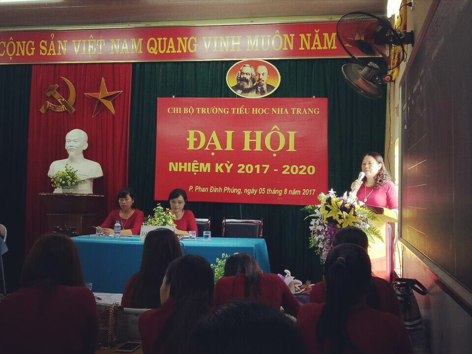
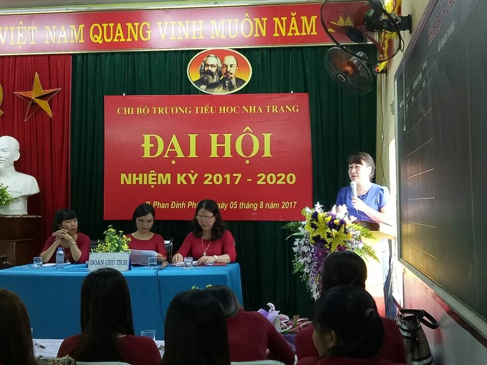
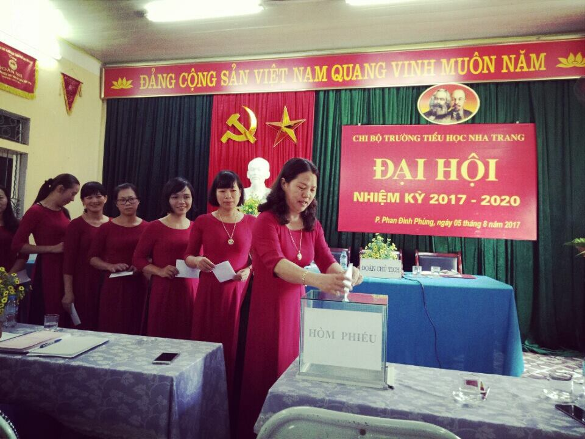
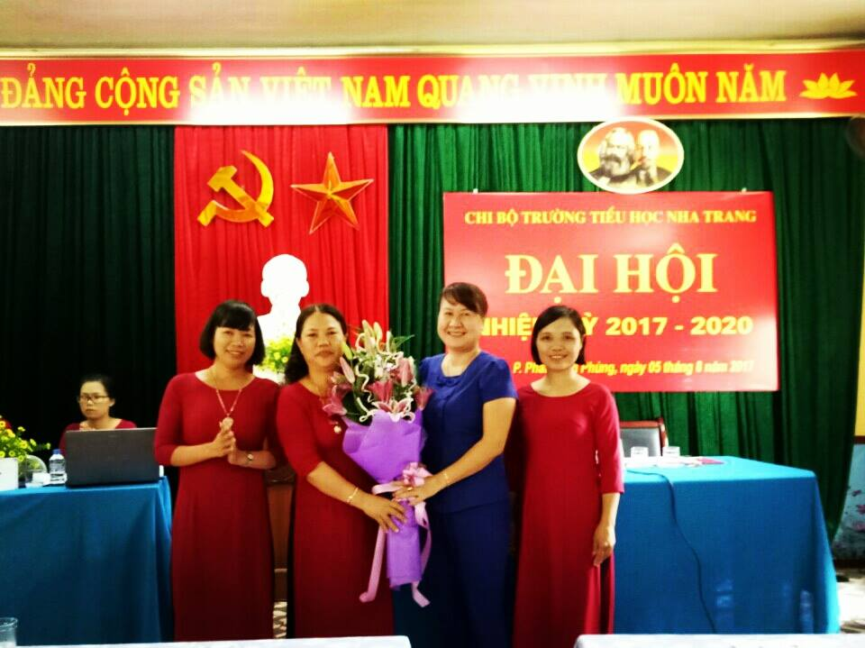

Đại hội Chi bộ trường tiểu học Nha Trang nhiệm kỳ 2017 - 2020.

Đại hội Chi bộ trường tiểu học Nha Trang nhiệm kỳ 2017 - 2020, đã tổng kết việc thực hiện Nghị quyết Đại hội chi bộ nhiệm kỳ 2015-2017, xây dựng mục tiêu, phương hướng, nhiệm vụ nhiệm kỳ 2017-2020 của chi bộ và Bầu ban chi ủy chi bộ nhiệm kỳ 2017-2020.
Về dự và chỉ đạo đại hội của chi bộ có các đồng chí đại biểu:
1. Đ/c Nông Thị Hồng Khuyên – Thành ủy viên, Bí thư Đảng ủy phường Phan Đình Phùng.
2. Đ/c Nguyễn Thị Phương - Đảng ủy viên - công chức Văn phòng Đảng ủy phường Phan Đình Phùng.
Cùng 25 đại biểu chính thức của chi bộ.
Đại hội đã nghe Báo cáo tổng kết nhiệm kỳ 2015-2017 và phương hướng, các chỉ tiêu của Chi bộ trong nhiệm kỳ 2017-2020, Báo cáo kiểm điểm của Ban Chi ủy nhiệm kỳ 2015-2017, nghe các ý kiến tham luận về công tác tự phê bình và phê bình, công tác giáo dục chính trị, tư tưởng cho cán bộ, đảng viên; công tác phát triển Đoàn viên ưu tú vào Đảng.… Đặc biệt, Đại hội được nghe ý kiến phát biểu chỉ đạo của đồng chí Nông Thị Hồng Khuyên - Thành ủy viên, Bí thư Đảng ủy phường Phan Đình Phùng. Đồng chí đã đánh giá, ghi nhận và biểu dương những thành tích của chi bộ đã đạt được trong nhiệm kỳ vừa qua, góp phần vào việc thực hiện thắng lợi nhiệm vụ chính trị của phường Phan Đình Phùng. Đồng thời cũng chỉ ra những thiếu sót, tồn tại cần khắc phục trong nhiệm kỳ tới và những yêu cầu mà chi bộ cần phấn đấu thực hiện tốt nhiệm vụ trong thời gian trước mắt và lâu dài.
Đại hội chi bộ trường tiểu học Nha Trang đã bầu 03 đ/c vào Ban Chi ủy nhiệm kỳ 2017-2020 gồm các đ/c:
1. Đ/c Phạm Thị Bích
2. Đ/c Nguyễn Thị Phương Nam
3. Đ/c Nguyễn Thị Minh Thu
Bầu Bí thư là đ/c Phạm Thị Bích, Phó Bí thư là đ/c Nguyễn Thị Phương Nam.
Sau 01 buổi làm việc khẩn trương, nghiêm túc, khách quan, Đại hội Chi bộ trường TH Nha Trang đã thành công tốt đẹp.
Dưới đây là một số hình ảnh trong đại hội.

Đồng chí Phạm Thị Bích - Bí thư chi bộ - Báo cáo việc thực hiện Nghị quyết Đại hội chi bộ nhiệm kỳ 2015-2017, phương hướng, nhiệm vụ nhiệm kỳ 2017-2020

Đồng chí Nông Thị Hồng Khuyên-Thành ủy viên, Bí thư Đảng ủy phường Phan Đình Phùng
phát biểu chỉ đạo tại đại hội

Đại hội bỏ phiểu bầu Ban chi ủy nhiệm kỳ 2017 - 2010

Đồng chí Nông Thị Hồng Khuyên - Thành ủy viên, Bí thư Đảng ủy phường Phan Đình Phùng
tặng hoa chúc mừng Ban chi ủy nhiệm kỳ 2017 - 2020.